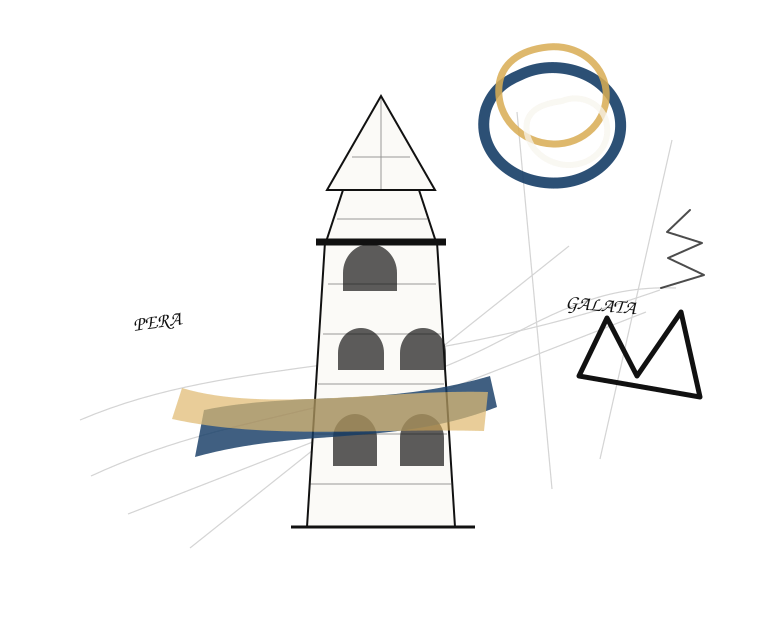
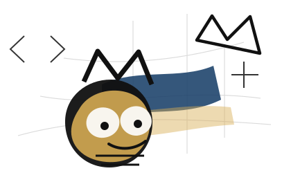

Pera · Galata · İstanbul
Yazıyorum,
kodluyorum,
geliştiriyorum.
Kahve eşliğinde fikirleri yazıya, prototipe ve çalışan ürünlere dönüştürüyorum. Bu site biraz arşiv, biraz atölye, biraz da Pera'da tutulmuş defter.

Son Yazılar
Tüm yazılarSeçili Projeler
Tüm projeler“
Sanat, düşüncenin görünür hâlidir. Kod ise, fikrin çalışır hâli.
O. E.
